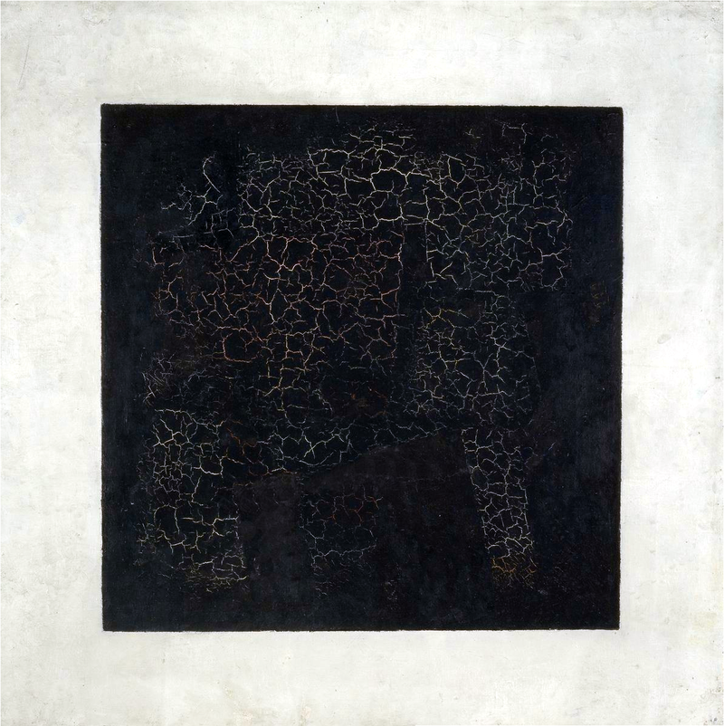
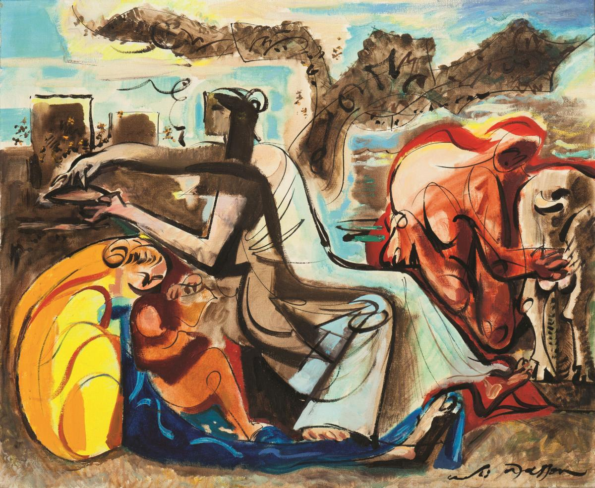
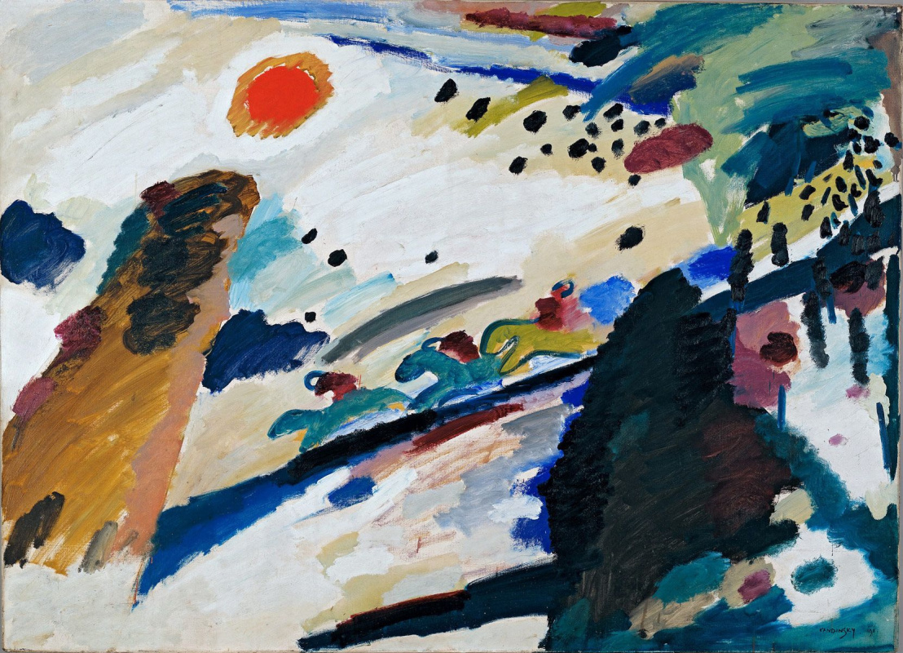
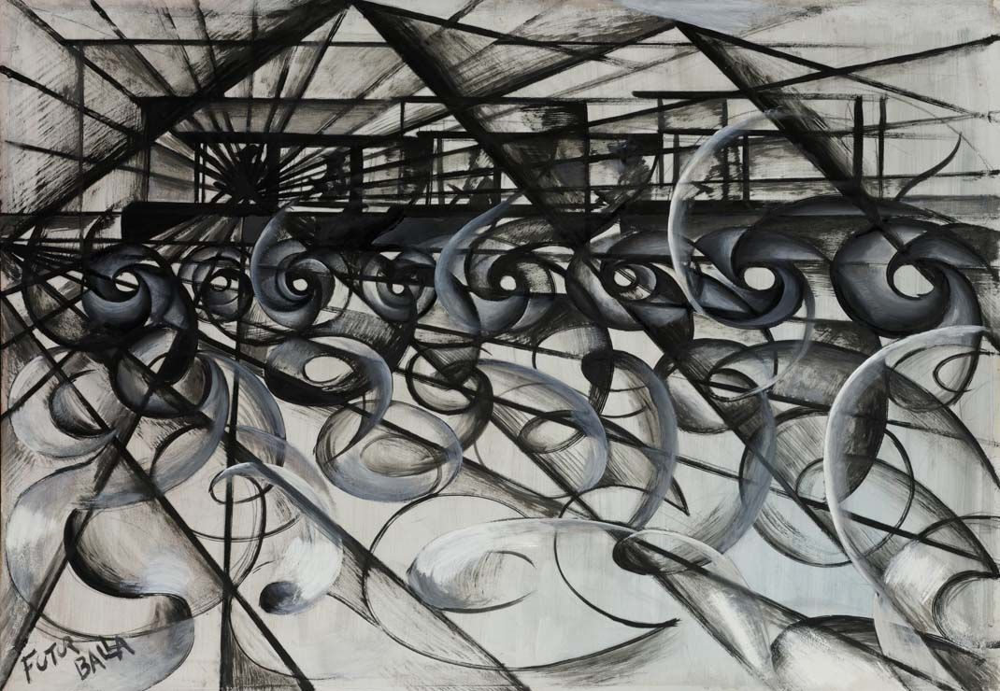

Черный квадрат. (Казимир Малевич)
Живопись 20 столетия отличается разнообразием, поиском новых форм и возникновением неординарных течений. Направления живописи, появившиеся в 20 веке, принято объединять под одним названием – авангардизм. Несмотря на это обобщение, стили, которые сюда относятся, весьма противоречивыми и имеют абсолютно разные черты.
Первые десятилетия импрессионизм оставался ведущим направлением в живописи. Но из-за сильных изменений и случившихся событий в течение 20 столетия – технический прогресс, войны, смены социального строя – помимо импрессионизма появилось много новых протестных и экспрессивных направлений. Живопись стала изменчивой и неоднозначной, а раскрепощенность, бунтарство и эпатажность стали главными отличительными чертами авангардизма.
Художники 20 века в своих работах хотели показать страдания простых людей и их отношение к конфликтам в обществе. Самыми заметными из появившихся направлений можно назвать абстракционизм, сюрреализм и футуризм.
Сюрреализм

Мед и молоко. (Андре Массон)
Сюрреализм появился в 1920-х годах во Франции и просуществовал до появления новых течений в 1960-х годах. Он является полной противоположностью футуризма. Основоположником этого направления считается писатель и поэт Андре Бретон, который является автором первого манифеста сюрреализма, написанного в 1924 году.
В конце 20-х годов Андре Бретон становится ярым сторонником левых троцкистских убеждений и вступает в Коммунистическую партию во Франции. Из-за этого часть сюрреалистов покидает движение. Сюрреализм пережил несколько кризисов, вторую мировую войну и постепенно, сливаясь с массовой культурой, стал составной частью постмодернизма.
Сюрреалисты не хотели видеть действительность, а идейной основой был уход в мир подсознания, грез и иллюзий. Именно поэтому на развитие стиля огромное влияние имел психоанализ Зигмунда Фрейда, особенно его изучение сновидений. Опираясь на труды Фрейда, сюрреалисты выдвинули в качестве главного требования к своему творчеству высвобождение образов из глубин подсознания, воплощение болезненных, бредовых состояний.
Художники сюрреализма рассматривали искусство, как способ приближения к бессознательному и мифу, иррациональному смыслу бытия. Очень часто для этого художники создавали свои работы под воздействием гипноза, алкоголя, наркотиков или голода. Главной целью было духовное возвышение и отделение духа от материального, а ценностями являлись свобода и иррациональность.
- обилие причудливых форм;
- абсурдное совмещение реальности и образов подсознания;
- частота обращения к магическим мотивам;
- эпатажность картин;
Абстракционизм

Романтический пейзаж. (Василий Кандинский)
В 1910 году в Германии русский художник Василий Кандинский написал свою первую абстрактную акварель, так и появился абстракционизм. Кандинский позже рассказал, что просто перевернул одну из картин Клода Моне, считая, что в такой ориентации она выглядит лучше.
За Кандинским последовали Михаил и Наталья Ларионовы, сформулировавшие философию стиля и создавшие лучизм, идею отражения лучей от предметов реальности. А также Казимир Малевич, разработавший супрематизм, комбинацию плоскостей и простейших геометрических форм. Также из направлений абстракционизма выделяют неопластицизм, использование прямоугольных форм и стандартных цветовых гамм, и ташизм, “живопись пятнами”. Считается, что возникновению абстракционизма также помогло появление фотографии, так как теперь можно было не делать подробное изображение.
Абстракционизм отвергает реалистичное воспроизведение окружающего мира. В своем творчестве абстракционисты используют простейшие элементы живописного языка, такие как линия, плоскость, геометрические формы, цветовые пятна, и комбинируют их так, чтобы создать у зрителя определенные эмоции. Работая с такими элементами, художники обращаются к фундаментальным композиционным принципам.
Одной из целей абстракционизма можно считать достижение гармонии в создании определенных цветовых сочетаний геометрических форм для достижения у смотрящего различных ассоциаций. Все формы и цветовые сочетания, которые находятся в периметре изображения, имеют идею, своё выражение и смысловую нагрузку.
- отказ от точного изображения предметов и явлений;
- создание ритмических, цветовых и пластических композиций;
- свободные ассоциации без конкретной смысловой нагрузки;
Футуризм

Движение автомобиля. (Джакомо Балла)
Футуризм зародился в Италии в феврале 1909 года, после того как итальянский поэт Филиппо Маринетти опубликовал «Манифест футуризма». В своем сочинении автор обращался к деятелям искусства с призывом к созданию новой концепции красоты в противовес старой традиционной культуре.
Спустя год вокруг Маринетти собралась группа его единомышленников, в которую входили живописцы Джакомо Бала, Карло Карра, Джино Северини, Умберто Бочонни и Луиджи Руссоло. В России продвижением идей футуризма занимался Давид Бурлюк. Он создал литературно-художественную группу «Гилея», в которую вошли многие молодые поэты и художники.
Футуризм отвергал достижения классической культуры, традиционное художественное наследие, культурные стереотипы, и, наоборот, восхищался наступающей индустриальной эпохой. Футуристы смотрели в будущее с оптимизмом и призывали создавать новую модель устройства мира, основанную на идеях урбанизации и технического прогресса. В этом направлении приветствовалось прославление движения, энергии, скорости, передовых достижений науки и техники того времени.
- обилие ярких цветов и строгих форм;
- динамичность и геометричность изображения;
- стремление изобразить предметы в движении;
- изображение 3D-объекта с нескольких сторон одновременно;
- попытки передать шумы и звуки средствами изобразительного искусства;